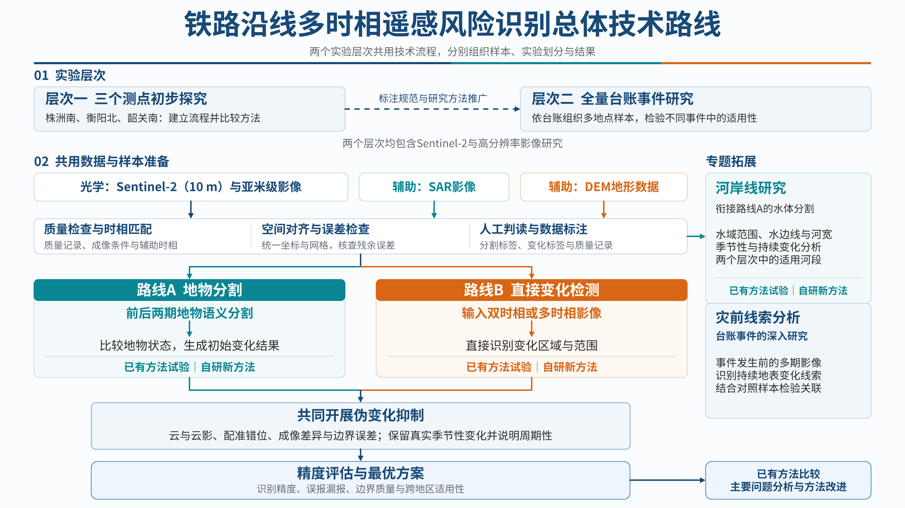
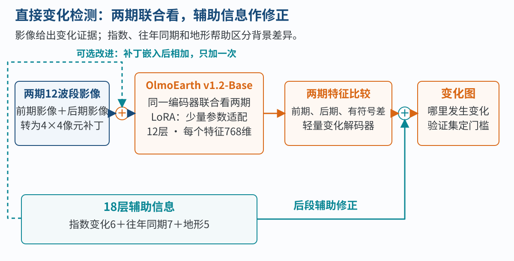
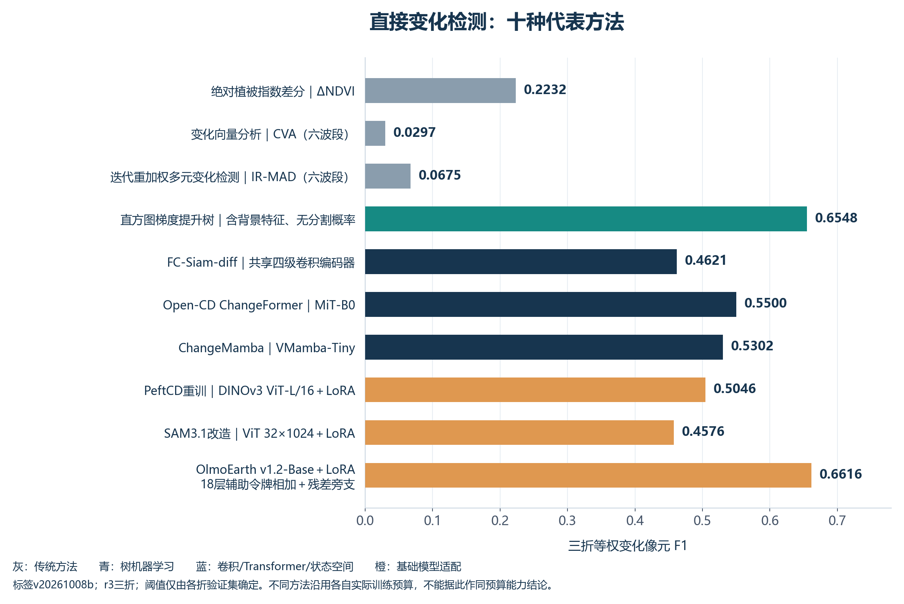
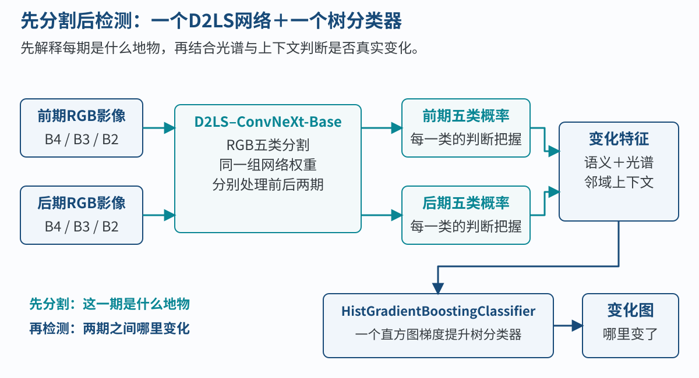
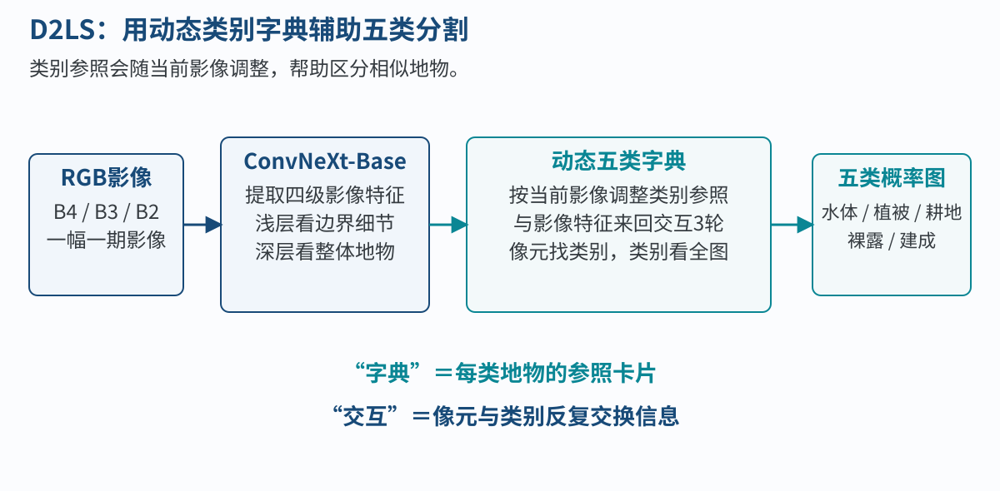
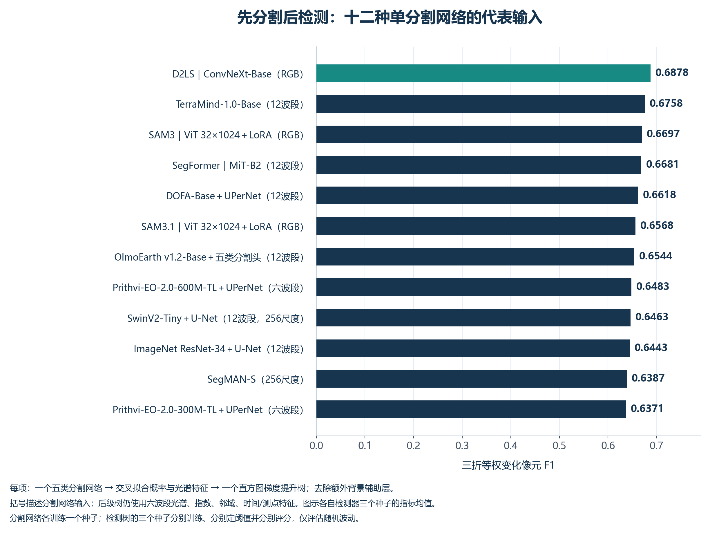
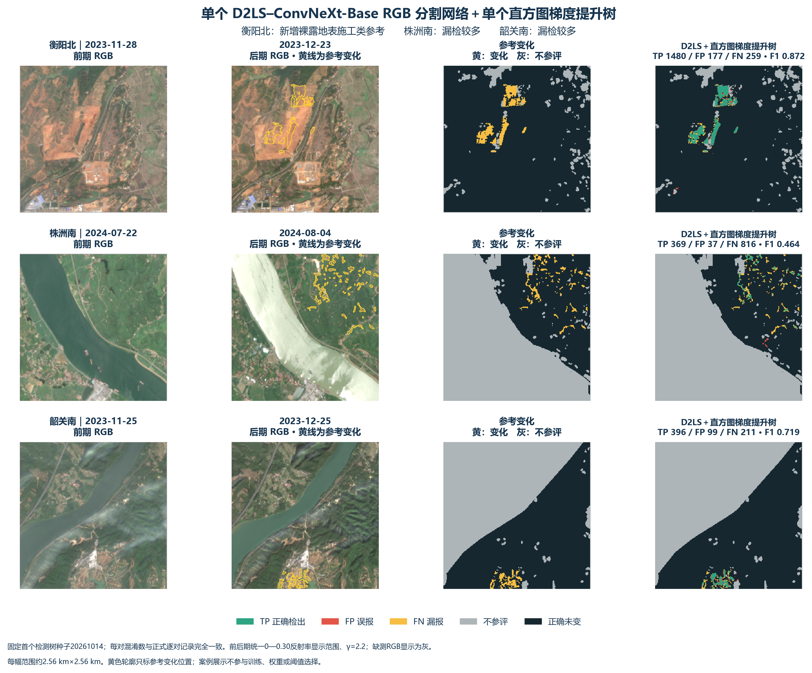
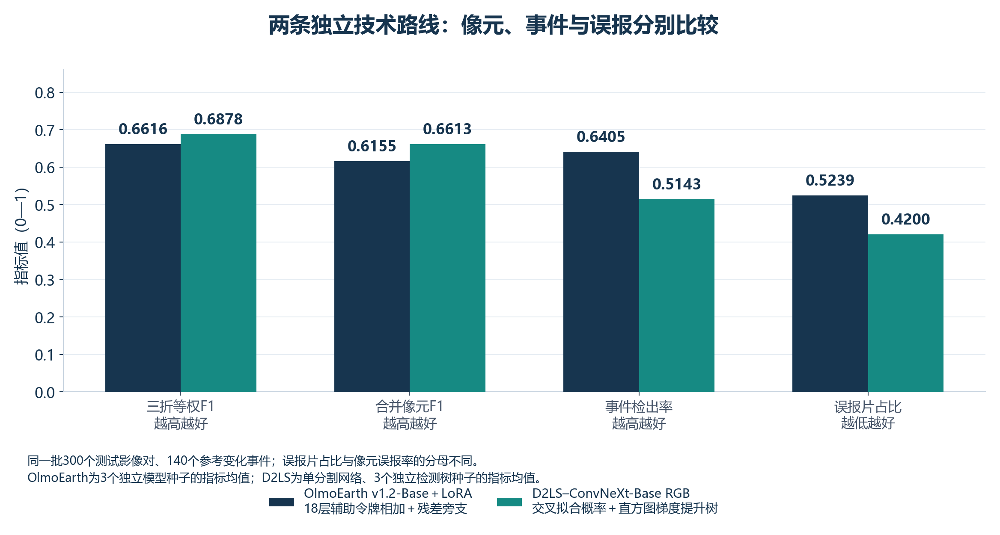

七、铁路沿线多时相遥感研究汇报
0 总体技术路线与当前进度

项目按总体技术路线推进：先在三个测点完成数据、参考标签与两条检测路线的比较，再把固定方法推广到台账事件；河岸线和灾前线索作为专题拓展。当前已完成三个测点Sentinel-2时间测试、两条路线与多维评分；高分独立核验、台账外部模型检验和近同期河岸检验仍需补齐。
1 总体思路与已完成工作
1.1 总体思路
这项研究希望用连续获取的卫星影像，发现铁路沿线值得核查的地表变化。我们先在株洲南、衡阳北和韶关南三个测点建立数据和评价流程，再研究怎样推广到台账事件。重点对象包括施工清表、植被减少、道路扩展和水域变化。
我们沿两条路线开展研究。直接变化检测把前后影像交给一个网络，直接输出变化范围。先分割后检测先识别两期地物，再结合地物概率、光谱差异和周围信息判断变化。前者侧重学习影像之间的差别，后者把地物含义明确加入判断过程。
下面先完整介绍直接变化检测，再介绍先分割后检测。每条路线都按“已有方法—本研究的方法—数据—实验—消融—详细结果”的顺序展开。最后介绍河岸研究、当前问题和后续安排。
1.2 已完成的工作
| 工作 | 当前进展 | 接下来要做什么 |
|---|---|---|
| 三测点数据 | 511个变化影像对；424期五类地物参考 | 持续检查困难样本，补独立高分核验 |
| 直接变化检测 | 完成传统、机器学习、深度网络与基础模型对照 | 重点检查长期测试误报和漏报 |
| 先分割后检测 | 完成多种分割器和固定树分类器的比较 | 最终选用D2LS–ConvNeXt-Base RGB＋一个直方图梯度提升树 |
| 河岸研究 | 完成多年水域、水边线和断面分析 | 补近同期高分与水位资料 |
| 高分与台账 | 形成93景拟购目录；完成922窗图像复核 | 落实核验影像，开展台账外部模型检验 |
2 直接变化检测：方法、模型、实验与结果
2.1 研究进展：从影像差值到学习型变化检测
早期方法先计算两期波段或指数的差，再用门槛判断变化。这类方法容易理解、无需训练，但植被季节、雾和水位变化也会产生较大差值。随后，卷积网络开始从标注中学习空间纹理，孪生网络用同一套参数处理两期影像。近年来，Transformer和状态空间模型进一步建模更大范围的关系；基础模型则先在大量影像上预训练，再用较少参数适配变化任务。
这些方法的共同目标，是把成像差异与目标地表变化分开。本研究把传统方法、树分类器、卷积网络、Transformer、状态空间模型和基础模型放到同一时间划分下比较。全卷积孪生网络、ChangeFormer、ChangeMamba分别代表其中几类发展路线。
2.2 参与比较的方法：名称、出处、输入与作用
| 类别 | 方法与骨干 | 出处 | 本项目输入 | 基本思路 |
|---|---|---|---|---|
| 传统统计 | 变化向量分析（六波段标准化欧氏距离） | 经典光谱/指数差分 | 两期Sentinel-2 B2/B3/B4/B8/B11/B12；差分除以本折训练集各波段标准差后求欧氏长度 | 把两期差异转成变化强度，再在验证集确定门槛。 |
| 传统统计 | 迭代重加权多元变化检测（IR-MAD） | Nielsen，2007 | 两期Sentinel-2 B2/B3/B4/B8/B11/B12；每个影像对独立无监督拟合，剔除云与缺测后估计关系 | 把两期差异转成变化强度，再在验证集确定门槛。 |
| 传统统计 | 红光反射率绝对差分 | 经典光谱/指数差分 | 两期Sentinel-2红光B4：绝对值|B4后−B4前| | 把两期差异转成变化强度，再在验证集确定门槛。 |
| 传统统计 | 红光反射率增亮差分 | 经典光谱/指数差分 | 两期Sentinel-2红光B4：max(B4后−B4前,0) | 把两期差异转成变化强度，再在验证集确定门槛。 |
| 传统统计 | 归一化植被指数绝对差分 | 经典光谱/指数差分 | 两期Sentinel-2近红外B8与红光B4：|NDVI后−NDVI前| | 把两期差异转成变化强度，再在验证集确定门槛。 |
| 树机器学习 | 光谱/指数/邻域特征＋直方图梯度提升树变化检测（含历史/用途/地形/铁路背景层；不含分割概率） | scikit-learn | 双期光谱、指数、邻域及历史/用途/地形/铁路背景特征；不输入分割模型概率 | 直接从光谱、指数和邻域特征学习变化。 |
| 卷积 | FC-EF四级卷积编码器（16/32/64/128）＋两期早拼接＋46层辅助残差/难负样本 | Daudt等，2018 | 双期六波段＋46层辅助图 | 用卷积比较两期影像，区别在于影像或特征在哪一步比较。 |
| 卷积 | FC-Siam-diff共享四级卷积编码器（16/32/64/128）＋绝对差跳连＋46层辅助残差/难负样本 | Daudt等，2018 | 双期六波段＋46层辅助图 | 用卷积比较两期影像，区别在于影像或特征在哪一步比较。 |
| 卷积 | FC-Siam-conc共享四级卷积编码器（16/32/64/128）＋两期特征拼接跳连＋46层辅助残差/难负样本 | Daudt等，2018 | 双期六波段＋46层辅助图 | 用卷积比较两期影像，区别在于影像或特征在哪一步比较。 |
| 卷积 | ImageNet ResNet-34＋U-Net第二步变化检测＋两期六波段/18层背景早拼接＋难负样本（无分割概率） | U-Net；本项目早融合适配 | 双期各六波段＋18层指数/历史/地形辅助早融合；不含分割概率 | 两期波段沿通道叠放，用编码—解码网络输出变化。 |
| 卷积 | SNUNet-CD：基础宽度16嵌套孪生卷积网络＋ECAM通道注意力＋六波段/46层辅助早融合 | 原方法；Open-CD复现 | 双期六波段＋46层辅助图 | 通过语义令牌、通道注意力或两期特征交互改善变化判断。 |
| Transformer/状态空间 | Bitemporal Image Transformer：ResNet-18 V1c＋语义令牌Transformer头＋六波段/46层辅助早融合 | 原方法；Open-CD复现 | 双期六波段＋46层辅助图 | 通过语义令牌、通道注意力或两期特征交互改善变化判断。 |
| Transformer/状态空间 | Open-CD版ChangeFormer：MiT-B0孪生编码器＋多尺度拼接/SegFormer头＋六波段/46层辅助早融合 | Bandara与Patel，2022 | 双期六波段＋46层辅助图 | 用层级Transformer提取不同尺度的两期特征。 |
| Transformer/状态空间 | ChangerEx：MiT-B0＋空间/通道交换与差分对齐头＋六波段/46层辅助早融合 | 原方法；Open-CD复现 | 双期六波段＋46层辅助图 | 通过语义令牌、通道注意力或两期特征交互改善变化判断。 |
| Transformer/状态空间 | ChangeMamba：ImageNet VMamba-Tiny状态空间编码器＋时空扫描变化解码器＋46层辅助早融合/难负样本 | Chen等，2024 | 双期六波段＋46层辅助早融合 | 用状态空间网络建模较大范围的空间和时间关系。 |
| Transformer/状态空间 | SwinV2-Tiny＋共享U-Net双时相特征＋语义一致性/Tversky变化检测（重训） | Swin / U-Net；本项目联合训练 | 双期影像和五类参考监督，SwinV2-Tiny共享编码器，语义一致性/Tversky训练 | 两期共享一个编码器，用语义一致性约束变化判断。 |
| Foundation | OlmoEarth v1.2-Base＋LoRA＋输入令牌级18层辅助嵌入相加＋18层指数/历史/地形零初始化残差旁支＋难负样本训练 | OlmoEarth；本项目变化任务适配 | 双期十二波段＋18层指数/历史/地形；辅助令牌嵌入相加与零初始化残差旁支；难负样本 | 联合理解前后两期多光谱影像，再逐像元判断变化。 |
| Foundation | TerraMind-1.0-Base＋LoRA双时相差分变化检测＋难负样本（无辅助图） | TerraMind | 双期光学输入，无辅助图；LoRA双时相差分变化头 | 使用多模态遥感预训练编码器提取两期特征。 |
| Foundation | Prithvi-EO-2.0-300M-TL原始预训练24层Transformer＋LoRA＋双时相差分变化解码器 | Prithvi-EO-2.0 | 双期HLS六波段；原始Prithvi预训练权重＋LoRA＋变化解码器 | 从多时相遥感预训练模型迁移地物特征。 |
| Foundation | PeftCD重训：DINOv3 ViT-L/16 SAT-493M＋LoRA＋GroupNorm双分支变化解码器 | PeftCD；DINOv3 / SAM官方模型 | 双期光学图像；DINOv3 ViT-L/16 SAT-493M＋LoRA＋GroupNorm变化解码器 | 利用预训练视觉特征，只训练少量适配参数和变化判断模块。 |
| Foundation | 参照PeftCD的SAM3.1改造：32层1024维视觉Transformer＋秩8 LoRA＋GroupNorm单头变化解码器 | PeftCD；DINOv3 / SAM官方模型 | 双期RGB；SAM3.1视觉Transformer＋LoRA＋单一两类变化头 | 利用预训练视觉特征，只训练少量适配参数和变化判断模块。 |
| Foundation | PeftCD重训：SAM2 Hiera-L＋LoRA＋GroupNorm双分支变化解码器 | PeftCD；DINOv3 / SAM官方模型 | 双期RGB；SAM2 Hiera-L＋LoRA＋GroupNorm变化解码器 | 利用预训练视觉特征，只训练少量适配参数和变化判断模块。 |
2.3 本研究采用的直接模型，以及各模块怎样工作
直接路线采用OlmoEarth v1.2-Base作为影像编码器，用LoRA进行任务适配，再接变化解码器。我们加入指数、历史和地形信息，研究这些信息在输入端与输出端怎样帮助判断变化。下面把各模块拆开说明。

先认识基础模型：预先学过遥感影像的编码器
OlmoEarth是一种遥感基础模型。“基础”表示它先从大量地球观测数据中学习可以迁移的影像表征，再适配具体任务。表征就是网络对影像的内部描述，例如某处具有怎样的纹理、植被状态，以及周围空间关系。本项目使用OlmoEarth v1.2-Base作为编码器，把前后两期12波段影像共同转换成特征，再训练变化判别模块。
补丁、768维和12层，分别表示什么
编码器先将影像按4×4像元划成空间补丁，把每块的多波段信息转成特征向量，称为令牌。可以把令牌理解为一张局部影像的“信息卡”。768维表示每张卡用768个数共同描述内容；这些数由训练学习，分别承担不同的组合表达。空间位置和时间编码为卡片补充“来自哪里、属于哪一期”的信息。
Transformer通过注意力更新这些卡片。注意力按内容相关性分配权重，让一个位置从其它空间位置和时相中汇集信息。例如某处亮度增加时，网络可以同时参考周围植被、裸地纹理和另一时相的状态。基本运算为
其中，Q表示当前要寻找的线索，K用于比较匹配程度，V是被汇集的信息，d是注意力内部的特征维数。12层表示这类表示更新连续进行12次，让局部光谱逐步结合更广的语义背景。两期在同一编码过程中交流，输出仍保留各自的时相特征。
LoRA：通过低秩增量适配变化任务
项目冻结预训练主权重，在注意力的query和value投影中加入LoRA。冻结表示训练期间保留原参数；新增LoRA参数、变化解码器和辅助分支参与学习。LoRA用两个较小矩阵表达权重更新：
W是预训练权重，A把特征压到16维的更新空间，B再映射回原维数。r=16规定更新的秩，α=16规定缩放，因此本设置的α/r为1。它把任务适配集中到较少参数上，保留预训练表征，并学习哪些关系更有助于区分真实变化。
两期特征怎样变成变化图
编码器得到前期特征F₁、后期特征F₂后，同时保留它们及有符号差：
两期原特征提供“原来是什么、后来是什么”，差值提供“沿什么方向改变”。解码器先用1×1卷积把2304通道压到256，再两次上采样，每次把空间尺寸扩大2倍，并用3×3卷积整理局部关系，通道依次256→128→64。最后的64通道像元特征记为h，输出头将其变为“不变、变化”两类分数。变化分数取两类之差，数值越大越倾向变化。
18层辅助信息：后段修正和输入令牌相加
辅助图a包含6层光谱指数差、7层往年同期偏离与观测信息、5层地形。指数描述植被、水分、裸土与亮度的改变；历史说明当前状态偏离往年同期多少；地形说明位置处于怎样的坡面环境。
后段旁支将h与a拼接，经两层32通道卷积提取修正信息，第二层采用膨胀卷积扩大邻域，再输出两类残差：
G的最后一层从零开始，辅助信息逐步学习怎样修正影像判别。输入令牌相加是在这一结构上的单项改进：18层图经步长4卷积压到192维，再投影到1536维，拆成两期各768维辅助令牌，加入影像补丁嵌入。相加位于位置/时间编码之前，只进行一次；后段旁支继续保留。这样辅助信息既能参与早期表征，也能作最后修正。
损失与难负样本：学会发现变化，也学会压住误报
训练使用交叉熵与Dice之和。交叉熵逐像元学习类别，Dice对齐预测变化区域与参考区域，突出数量稀少的变化像元：
pᵢ是变化概率，yᵢ是变化标签。正样本中心裁块增加变化区域被训练看到的机会。难负样本则选择参考为不变、两期晴空、指数变化明显的像元，将其交叉熵权重乘5。它们最接近实际误报来源，训练因此直接学习季相、成像差异与目标变化之间的区别。
| 模块 | 输入 | 做什么 | 输出 |
|---|---|---|---|
| 补丁嵌入与时空编码 | 两期12波段 | 整理局部信息，保留位置与时相 | 768维令牌 |
| 12层Transformer＋LoRA | 两期令牌 | 选择相关信息，适配变化任务 | F₁、F₂ |
| 比较与解码器 | 两期及其差，共2304通道 | 恢复空间细节，逐像元判别 | 64通道h与两类分数 |
| 18层辅助旁支 | h及指数、历史、地形 | 学习背景修正 | 两类残差 |
| 变化输出头 | 主分数＋残差 | 计算变化倾向 | 变化logit图 |
方法来源：OlmoEarth原论文、官方实现、LoRA原论文。两期特征比较、变化解码器与18层辅助分支是本项目的任务适配。
2.4 辅助信息具体有哪些，怎样计算
辅助层具体是什么，怎样构建
直接变化检测采用18层辅助图：6层指数变化、7层历史同期信息、5层地形。它们分别回答地表变了什么、是否偏离往年状态、变化发生在什么地形背景下。先将影像数值恢复为反射率，再计算指数；B2、B3、B4、B8、B11分别代表蓝、绿、红、近红外和短波红外波段。
下表中，Δ统一表示后期减前期。六层差值在两期共同晴空有效区域内，用中位数median和中位绝对偏差MAD进行稳健标准化，再截断至±6并除以6，缺测位置填0。这样突出相对于本对影像大多数区域的局部异常。
| 层 | 名称 | 如何计算 | 用途 |
|---|---|---|---|
| 1 | ΔNDVI | NDVI=(B8−B4)/(B8+B4)，取两期差 | 植被增加或减少 |
| 2 | ΔNDWI | NDWI=(B3−B8)/(B3+B8)，取两期差 | 水面与湿润状态变化 |
| 3 | ΔMNDWI | MNDWI=(B3−B11)/(B3+B11)，取两期差 | 水陆边界变化 |
| 4 | ΔBSI | BSI=[(B11+B4)−(B8+B2)]/[(B11+B4)+(B8+B2)]，取两期差 | 裸土与覆盖变化 |
| 5 | ΔSWN | SWN=B11−B8，取两期差 | 短波红外与近红外差异变化 |
| 6 | Δ亮度 | 亮度=(B2+B3+B4)/3，取两期差 | 地表亮暗变化 |
| 7 | 前期NDVI历史偏离 | 前期NDVI相对历史同期median/MAD归一化 | 判断变化前植被状态 |
| 8 | 前期MNDWI历史偏离 | 前期MNDWI相对历史同期median/MAD归一化 | 判断变化前水体状态 |
| 9 | 前期BSI历史偏离 | 前期BSI相对历史同期median/MAD归一化 | 判断变化前裸土状态 |
| 10 | 后期NDVI历史偏离 | 后期NDVI相对历史同期median/MAD归一化 | 识别植被异常 |
| 11 | 后期MNDWI历史偏离 | 后期MNDWI相对历史同期median/MAD归一化 | 识别水体异常 |
| 12 | 后期BSI历史偏离 | 后期BSI相对历史同期median/MAD归一化 | 识别裸土异常 |
| 13 | 后期历史观测数 | 后期可用历史观测数/10 | 表示历史参照的充分程度 |
| 14 | 相对高程 | (高程−测点高程中位数)/50米，截断至±1 | 区分相对高低位置 |
| 15 | 坡度 | 坡度/45度 | 表示地表陡缓 |
| 16 | 坡向正弦 | sin(坡向)×min(坡度/10度,1) | 表示坡向并减弱平地影响 |
| 17 | 坡向余弦 | cos(坡向)×min(坡度/10度,1) | 补全坡向方向信息 |
| 18 | 局部起伏 | 局部高程起伏/30米 | 表示周边地形变化程度 |
历史参照对前、后期分别建立：只取该日期以前、至少早300天、年内日期相差不超过30天的清楚影像；至少3次观测才计算逐像元median和MAD。MAD下限为0.02，偏离值同样截断至±6再除6。历史输入使用过去观测。地形来自Copernicus DEM GLO-30，重采样到共同10米网格方便对齐，原始高程信息仍是30米尺度。
46层候选库存中的其余信息
候选库存共46层，其中上述18层用于直接模型。其余28层按组存储，用于独立输入对照。
| 候选组 | 层数 | 具体内容与构建 |
|---|---|---|
| 影像质量 | 15 | 两期各4张厚云、薄云、云影、缺测图，共8层；跨轨1层、两期雾2层、两期耀斑2层、时间间隔1层、配准位移1层 |
| Sentinel-1雷达 | 6 | 各光学日期±12天最近RTC影像，VV/VH经3×3压斑后计算ΔVV、ΔVH、Δ(VH−VV)；另附两期雷达齐备、最大时间偏离/12、是否同一雷达景3个标记 |
| 历史用途 | 7 | 前期及以前晴空观测的水体频率1层、NDVI的10/50/90分位3层、BSI中位数1层、耕作轮回比例1层、有效观测数/50共1层 |
耕作轮回比例统计跨年同时出现高NDVI≥0.6和低NDVI≤0.3的年份比例。雷达时间窗包括光学日期之后的资料，应用时相应预留观测等待时间。
2.5 实验数据怎样处理，怎样划分训练与测试
变化数据采用Sentinel-2 L2A地表反射率影像，覆盖2021年7月至2026年7月。每个测点统一到256×256、10米格网。12个波段为B1、B2、B3、B4、B5、B6、B7、B8、B8A、B9、B11、B12；其中原始20米、60米波段重采样到共同格网。
前期影像先配准到后期影像的位置，再逐像元对应。云、缺测、图外空边和难以判读的位置设为不参评。标签分为0“不变”、1“变化”和255“不参评”，全库有511个影像对、19768个变化参考像元。
变化参考通过AI辅助精标与保存复核记录构建。数据中的参考变化包括施工清表、植被扰动和水域变化等；模型分数表示与这套参考的符合程度。后续高分影像用于补充独立核验。
| 测试窗口 | 训练截止 | 验证窗口 | 训练对 | 验证对 | 测试对 | 测试变化像元 |
|---|---|---|---|---|---|---|
| 2023年4—7月 | 2022年10月之前 | 2022年10月—2023年3月 | 114 | 53 | 22 | 905 |
| 2023年11月—2024年3月 | 2023年10月之前 | 2023年10月 | 210 | 6 | 20 | 2589 |
| 2024年4月以后 | 2023年11月之前 | 2023年11月—2024年3月 | 221 | 20 | 258 | 3678 |
2.6 实验设置与评分方法
每折使用较早影像训练，较后影像验证，再用未来影像测试。OlmoEarth每次训练裁取128×128像元，批大小8，AdamW学习率0.0003；每轮50步，最多80轮，至少20轮，连续20轮验证无改善时早停。训练加入翻转、90度旋转和50%正样本中心裁块；难负样本的交叉熵权重乘5。
推理窗口128、步长64，重叠区域拼回256×256完整结果。权重和判断门槛均在验证集确定，测试阶段保持固定。主要指标是各折F1的等权平均，同时保留合并像元F1。三个测试窗口共300对、7172个变化参考像元。不同方法的输入和训练设置在表中注明；同一模型的输入变化在下一节单独比较。
2.7 方法比较结果：每种方法展示一个代表配置
| 方法 | 输入 | 三折平均F1 | 合并F1 | 重复试验 |
|---|---|---|---|---|
| 变化向量分析（六波段标准化欧氏距离） | 两期Sentinel-2 B2/B3/B4/B8/B11/B12；差分除以本折训练集各波段标准差后求欧氏长度 | 0.0297 | 0.0165 | 无需监督训练 |
| 迭代重加权多元变化检测（IR-MAD） | 两期Sentinel-2 B2/B3/B4/B8/B11/B12；每个影像对独立无监督拟合，剔除云与缺测后估计关系 | 0.0675 | 0.0432 | 无需监督训练 |
| 红光反射率绝对差分 | 两期Sentinel-2红光B4：绝对值|B4后−B4前| | 0.0640 | 0.0330 | 无需监督训练 |
| 红光反射率增亮差分 | 两期Sentinel-2红光B4：max(B4后−B4前,0) | 0.0743 | 0.0472 | 无需监督训练 |
| 归一化植被指数绝对差分 | 两期Sentinel-2近红外B8与红光B4：|NDVI后−NDVI前| | 0.2232 | 0.1463 | 无需监督训练 |
| 光谱/指数/邻域特征＋直方图梯度提升树变化检测（含历史/用途/地形/铁路背景层；不含分割概率） | 双期光谱、指数、邻域及历史/用途/地形/铁路背景特征；不输入分割模型概率 | 0.6548 | 0.6172 | 3次训练 |
| FC-EF四级卷积编码器（16/32/64/128）＋两期早拼接＋46层辅助残差/难负样本 | 双期六波段＋46层辅助图 | 0.4049 | 0.3600 | 1次训练 |
| FC-Siam-diff共享四级卷积编码器（16/32/64/128）＋绝对差跳连＋46层辅助残差/难负样本 | 双期六波段＋46层辅助图 | 0.4621 | 0.4763 | 1次训练 |
| FC-Siam-conc共享四级卷积编码器（16/32/64/128）＋两期特征拼接跳连＋46层辅助残差/难负样本 | 双期六波段＋46层辅助图 | 0.3872 | 0.2988 | 1次训练 |
| ImageNet ResNet-34＋U-Net第二步变化检测＋两期六波段/18层背景早拼接＋难负样本（无分割概率） | 双期各六波段＋18层指数/历史/地形辅助早融合；不含分割概率 | 0.5564 | 0.5070 | 1次训练 |
| SNUNet-CD：基础宽度16嵌套孪生卷积网络＋ECAM通道注意力＋六波段/46层辅助早融合 | 双期六波段＋46层辅助图 | 0.4895 | 0.4798 | 1次训练 |
| Bitemporal Image Transformer：ResNet-18 V1c＋语义令牌Transformer头＋六波段/46层辅助早融合 | 双期六波段＋46层辅助图 | 0.5055 | 0.4287 | 1次训练 |
| Open-CD版ChangeFormer：MiT-B0孪生编码器＋多尺度拼接/SegFormer头＋六波段/46层辅助早融合 | 双期六波段＋46层辅助图 | 0.5500 | 0.5399 | 1次训练 |
| ChangerEx：MiT-B0＋空间/通道交换与差分对齐头＋六波段/46层辅助早融合 | 双期六波段＋46层辅助图 | 0.4719 | 0.4783 | 1次训练 |
| ChangeMamba：ImageNet VMamba-Tiny状态空间编码器＋时空扫描变化解码器＋46层辅助早融合/难负样本 | 双期六波段＋46层辅助早融合 | 0.5302 | 0.5089 | 1次训练 |
| SwinV2-Tiny＋共享U-Net双时相特征＋语义一致性/Tversky变化检测（重训） | 双期影像和五类参考监督，SwinV2-Tiny共享编码器，语义一致性/Tversky训练 | 0.4087 | 0.4111 | 1次训练 |
| OlmoEarth v1.2-Base＋LoRA＋输入令牌级18层辅助嵌入相加＋18层指数/历史/地形零初始化残差旁支＋难负样本训练 | 双期十二波段＋18层指数/历史/地形；辅助令牌嵌入相加与零初始化残差旁支；难负样本 | 0.6616 | 0.6155 | 3次训练 |
| TerraMind-1.0-Base＋LoRA双时相差分变化检测＋难负样本（无辅助图） | 双期光学输入，无辅助图；LoRA双时相差分变化头 | 0.4576 | 0.4432 | 1次训练 |
| Prithvi-EO-2.0-300M-TL原始预训练24层Transformer＋LoRA＋双时相差分变化解码器 | 双期HLS六波段；原始Prithvi预训练权重＋LoRA＋变化解码器 | 0.3597 | 0.3512 | 1次训练 |
| PeftCD重训：DINOv3 ViT-L/16 SAT-493M＋LoRA＋GroupNorm双分支变化解码器 | 双期光学图像；DINOv3 ViT-L/16 SAT-493M＋LoRA＋GroupNorm变化解码器 | 0.5046 | 0.4286 | 1次训练 |
| 参照PeftCD的SAM3.1改造：32层1024维视觉Transformer＋秩8 LoRA＋GroupNorm单头变化解码器 | 双期RGB；SAM3.1视觉Transformer＋LoRA＋单一两类变化头 | 0.4576 | 0.4242 | 1次训练 |
| PeftCD重训：SAM2 Hiera-L＋LoRA＋GroupNorm双分支变化解码器 | 双期RGB；SAM2 Hiera-L＋LoRA＋GroupNorm变化解码器 | 0.4810 | 0.4190 | 1次训练 |

在三次独立训练的直接模型中，OlmoEarth输入辅助相加方案三折平均F1为0.6616，合并F1为0.6155。传统差分仍容易受物候和成像条件影响；只依靠变化强度时，召回与误报较难兼顾。
2.8 输入与结构消融：辅助信息加在哪里更合适
| 完整方法与输入 | 2023春夏F1 | 2023冬—2024春F1 | 2024年4月以后F1 | 三折平均F1 | 合并F1 | 重复试验 |
|---|---|---|---|---|---|---|
| OlmoEarth v1.2-Base＋LoRA双时相联合编码变化检测＋难负样本训练（无辅助图） | 0.7155 | 0.6444 | 0.5059 | 0.6219 | 0.5706 | 3次独立训练 |
| OlmoEarth v1.2-Base＋LoRA双时相联合编码变化检测＋18层指数/历史/地形零初始化残差旁支＋难负样本训练 | 0.7348 | 0.6516 | 0.5361 | 0.6408 | 0.5837 | 3次独立训练 |
| OlmoEarth v1.2-Base＋LoRA＋输入令牌级18层辅助嵌入相加＋18层指数/历史/地形零初始化残差旁支＋难负样本训练 | 0.7434 | 0.6832 | 0.5583 | 0.6616 | 0.6155 | 3次独立训练 |
| OlmoEarth v1.2-Base＋LoRA＋18层辅助金字塔在变化解码器多尺度FiLM仿射调制＋难负样本训练 | 0.6371 | 0.6918 | 0.6016 | 0.6435 | 0.6352 | 2次独立训练 |
| OlmoEarth v1.2-Base＋LoRA＋指数/地形残差旁支＋难负样本训练（移除历史同期） | 0.7778 | 0.6460 | 0.5716 | 0.6651 | 0.6177 | 1次独立训练 |
| OlmoEarth v1.2-Base＋LoRA＋指数/历史/地形/Sentinel-1雷达残差旁支＋难负样本训练 | 0.6936 | 0.6408 | 0.4026 | 0.5790 | 0.4752 | 1次独立训练 |
没有辅助信息时，三折平均F1为0.6219；加入18层后段残差旁支后为0.6408；再加入输入令牌辅助相加后为0.6616。两项提升分别约为0.0189和0.0208。按相同测试影像对重抽得到的差值区间均跨0，当前结果显示改善方向，还需要更多独立样本确认。去历史、加雷达和FiLM的重复次数见表，解释时一并考虑。
2.9 详细结果：像元、事件、变化类型与成像条件
| 统计范围 | 精确率 | 召回率 | F1 |
|---|---|---|---|
| 2023年4—7月测试 | 0.9188 | 0.6265 | 0.7434 |
| 2023年11月—2024年3月测试 | 0.7740 | 0.6121 | 0.6832 |
| 2024年4月以后测试 | 0.4786 | 0.6749 | 0.5583 |
| 全部测试像元合并 | 0.5895 | 0.6461 | 0.6155 |
| 参考变化斑块 | 平均检出数 | 检出率 | 平均报出斑块 | 误报片占比 |
|---|---|---|---|---|
| 140 | 89.7 | 64.0% | 215.3 | 52.4% |
| 变化类型 | 参考像元数 | 召回率 |
|---|---|---|
| 新增裸露 | 5407 | 69.4% |
| 植被减少 | 1457 | 68.8% |
| 道路增加 | 383 | 70.5% |
| 建筑增加 | 155 | 0.0% |
| 水域增加 | 572 | 43.6% |
| 水域减少 | 617 | 57.4% |
| 测点 | 精确率 | 召回率 | F1 |
|---|---|---|---|
| 衡阳北 | 0.6620 | 0.7003 | 0.6803 |
| 韶关南 | 0.3804 | 0.4821 | 0.4222 |
| 株洲南 | 0.6229 | 0.6434 | 0.6290 |
| 条件 | 变化参考像元 | 精确率 | 召回率 | F1 |
|---|---|---|---|---|
| 有雾 | 1765 | 0.4267 | 0.6676 | 0.5190 |
| 清楚 | 5407 | 0.6787 | 0.6391 | 0.6576 |
| 河岸带内 | 1636 | 0.3810 | 0.4586 | 0.4125 |
| 河岸带外 | 5536 | 0.6615 | 0.7015 | 0.6805 |
| 地物背景 | 不变像元 | 误报像元均数 | 全部误报中的占比 | 该类不变像元的误报率 |
|---|---|---|---|---|
| 建成 | 593357 | 94.7 | 2.9% | 0.016% |
| 无 c23 | 1146837 | 339.0 | 10.5% | 0.030% |
| 植被 | 5590860 | 609.3 | 18.9% | 0.011% |
| 水体 | 160364 | 1454.7 | 44.2% | 0.907% |
| 耕地 | 1514840 | 108.3 | 3.2% | 0.007% |
| 裸露 | 1754971 | 660.7 | 20.4% | 0.038% |
OlmoEarth输入辅助相加方案的参考变化斑块检出率约64.0%，误报片占比约52.4%。这说明模型能发现较多变化，但仍会报出不少额外斑块。有雾与清楚子集包含不同站点和变化类型，两组分数用于定位困难条件。
3 先分割后检测：最终方法、数据与完整结果
3.1 已有研究：为什么先识别地物，再判断变化
先分割后检测把问题分成两步：先回答“每一期是什么地物”，再回答“两期之间发生了什么”。已有研究大体有三种做法。第一种比较两张地物类别图，方法直观；第二种保留每类概率，再结合光谱训练变化分类器，能够利用不确定性；第三种同时训练语义与变化网络，让两个任务共享特征。本研究最终采用第二种。
地物分割方法也经历了从卷积编码—解码网络，到多尺度Transformer，再到预训练基础模型的变化。D2LS在其中加入动态地类字典，使类别参照随当前影像调整。D2LS原论文和ConvNeXt原论文分别提供分割框架与主干网络。
3.2 参与比较的地物分割方法
| 分割方法与骨干 | 出处 | 分割网络输入 | 方法特点 |
|---|---|---|---|
| D2LS–ConvNeXt-Base五类分割（RGB） | Zou等，D2LS | RGB三波段 | 用影像相关的地类字典改善五类识别。 |
| TerraMind-1.0-Base＋LoRA＋UPerNet五类分割（12波段） | 对应方法的作者模型；文献见附录 | 多光谱十二波段 | 将已有遥感表示适配为本项目逐期五类分割。 |
| SAM3 32层1024维视觉Transformer＋秩8 LoRA五类分割（RGB） | SAM3 / SAM3.1官方模型 | RGB三波段 | 适配通用视觉编码器，输出本项目五类概率。 |
| Satlas单期多光谱预训练ResNet-50＋U-Net五类分割（12波段） | U-Net；对应预训练骨干 | 多光谱十二波段 | 浅层细节通过跳连进入上采样结果。 |
| MiT-B2＋SegFormer五类分割（12波段） | SegFormer | 多光谱十二波段 | 层级Transformer提取多尺度地物信息。 |
| ConvNeXt-Tiny＋U-Net五类分割（12波段） | U-Net；对应预训练骨干 | 多光谱十二波段 | 浅层细节通过跳连进入上采样结果。 |
| DOFA-Base波长条件补丁嵌入Transformer＋LoRA＋UPerNet五类分割 | 对应方法的作者模型；文献见附录 | 多光谱十二波段 | 将已有遥感表示适配为本项目逐期五类分割。 |
| SwinV2-Tiny＋UPerNet五类分割（12波段，128尺度） | 对应方法的作者模型；文献见附录 | 多光谱十二波段 | 将已有遥感表示适配为本项目逐期五类分割。 |
| SAM3.1 32层1024维视觉Transformer＋秩8 LoRA五类分割（RGB） | SAM3 / SAM3.1官方模型 | RGB三波段 | 适配通用视觉编码器，输出本项目五类概率。 |
| OlmoEarth v1.2-Base单期编码器＋LoRA＋上采样五类分割头（12波段） | 对应方法的作者模型；文献见附录 | 多光谱十二波段 | 将已有遥感表示适配为本项目逐期五类分割。 |
| Prithvi-EO-2.0-600M-TL 32层Transformer＋LoRA＋UPerNet五类分割（HLS六波段） | 对应方法的作者模型；文献见附录 | HLS六波段 | 将已有遥感表示适配为本项目逐期五类分割。 |
| SoftCon预训练ResNet-50＋U-Net五类分割（12波段） | U-Net；对应预训练骨干 | 多光谱十二波段 | 浅层细节通过跳连进入上采样结果。 |
| SwinV2-Tiny＋U-Net五类分割（12波段，256尺度） | U-Net；对应预训练骨干 | 多光谱十二波段 | 浅层细节通过跳连进入上采样结果。 |
| ImageNet ResNet-34＋U-Net五类分割（12波段） | U-Net；对应预训练骨干 | 多光谱十二波段 | 浅层细节通过跳连进入上采样结果。 |
| SSL4EO-S12 MoCo预训练ResNet-50＋U-Net五类分割（12波段） | U-Net；对应预训练骨干 | 多光谱十二波段 | 浅层细节通过跳连进入上采样结果。 |
| Prithvi-EO-2.0-300M-TL 24层Transformer＋LoRA＋UPerNet五类分割（HLS六波段） | 对应方法的作者模型；文献见附录 | HLS六波段 | 将已有遥感表示适配为本项目逐期五类分割。 |
| SegMAN-S小型编码器＋多尺度局部注意力/全局状态空间分割解码器（256尺度） | 对应方法的作者模型；文献见附录 | 多光谱十二波段 | 将已有遥感表示适配为本项目逐期五类分割。 |
| ImageNet ResNet-34＋U-Net++五类分割（12波段） | U-Net；对应预训练骨干 | 多光谱十二波段 | 浅层细节通过跳连进入上采样结果。 |
3.3 最终方案：一个D2LS网络加一个树分类器
本研究最终选定D2LS–ConvNeXt-Base RGB五类分割，加一个直方图梯度提升树变化分类器。同一个D2LS网络先后处理两期影像，输出两期五类概率。树分类器再结合概率、光谱差异和邻域特征，得到变化图。
D2LS负责提供地物解释，树分类器负责判断变化。这两步各有明确的输入和输出，下面分别展开。

D2LS与ConvNeXt-Base各承担什么工作
D2LS是一套完整的语义分割框架，包含影像主干、动态类别字典、交互模块和像元输出头。ConvNeXt-Base承担其中的影像主干，负责从RGB影像提取多尺度特征；字典与输出头进一步把这些特征变成水体、植被、耕地、裸露、建成五类概率。前后两期分别经过同一组网络权重，得到可以逐像元比较的语义描述。
ConvNeXt属于卷积网络。卷积让一组可学习滤波器在影像上滑动，提取边缘、纹理及它们的组合；随着网络加深，特征从局部细节转向地物结构。残差连接将模块输入与学习到的更新相加，使原信息沿网络传递，并让每个模块集中学习需要补充的部分。ConvNeXt以较大的卷积感受野、通道混合和残差结构组织这些更新。
Base是这个网络家族的规模配置名，规定网络的宽度与深度。本项目四个阶段的通道数为128、256、512、1024，对应原图1/4、1/8、1/16、1/32的空间尺度。浅层保留道路和水边的细节，深层汇集较大范围的地物背景。D2LS把四级特征各投影为256维，插值对齐到1/4尺度，拼接后再压为256维影像表征F，把细节与语义放到同一张特征图上。
动态字典：为当前影像调整五类参照
“字典”可以理解为五类地物各自的参照卡片。每类从可学习类别向量展开四个候选，影像调制模块读取最深层特征，经全局汇聚和多层感知机生成四个组合权重。每类四权重经过softmax后相加为1，加权组成当前影像的类别令牌：
I表示当前影像，bₖⱼ是候选向量，aₖⱼ是影像决定的权重。最终得到五个256维动态令牌。这个机制让同一类的参照随场景调整，例如将当前影像里的水体形态与周围背景一起纳入表达。
三轮双向注意力：像元与类别共同更新
交互分两个方向。类别令牌先向影像特征查询，汇集“这一类在本幅图里有什么证据”；像元特征再向更新后的类别令牌查询，获取“自己与哪类更相关”的语义信息。每轮带残差相加与归一化，连续三轮逐步更新五个令牌和整幅特征图。省略多头投影及位置编码，过程可写为：
Q是五类参照，F是像元表征。LN表示层归一化，用于整理特征幅值。双向交流把类别的整体含义传回像元，同时让类别参照吸收当前影像的实际形态。
输出头：把类别参照落实到每一个像元
更新后的影像特征经过两次2倍PixelShuffle恢复到原图尺度。PixelShuffle将一部分通道重新排列到空间位置，形成更密的像元网格，两次重排后得到16通道像元特征。五个动态令牌经三层MLP生成各自的16维分类向量，分别与像元特征相乘，得到五类logit。可以把这一步理解为：用当前影像调整好的五张参照卡，逐位置计算匹配分数。
Softmax把五个分数变成和为1的概率：
c是硬类别，只保留得分最高的一类；五类概率还保留判断把握和类别之间的接近程度。例如两个像元都被归为植被，一个植被概率0.95，另一个0.40，后者与其它地类的分界更模糊。后续变化判别利用完整概率，能观察地类内部的置信分布改变。
三项损失分别学什么
分割训练的目标为
主交叉熵监督动态字典的五类输出；辅助交叉熵用基础静态令牌的输出学习稳定类别参照；字典对比项使同类令牌在不同影像间更集中、不同类之间更分开。实际对比项取“同类动态令牌的批内离散度”与“不同类平均令牌的距离”之比，前者减小、后者增大都会改善该项。
最终变化路线保持一个D2LS网络加一个HistGradientBoostingClassifier。D2LS分别输出两期五类概率；语义概率、光谱差异和邻域统计组成特征；一个直方图梯度提升树分类器学习哪些组合对应真实变化，并输出变化倾向。
| 模块 | 输入 | 做什么 | 输出 |
|---|---|---|---|
| ConvNeXt-Base主干 | 当期RGB | 提取边界、纹理和地物背景 | 四级128/256/512/1024通道特征 |
| 多尺度聚合 | 四级特征 | 对齐空间尺度，结合细节与语义 | 256维影像表征F |
| 动态五类字典 | 类别候选及当前影像 | 每类四候选加权组合 | 五个256维令牌Q |
| 三轮双向交互 | Q与F | 类别找证据，像元取语义 | 更新后的Q、F |
| PixelShuffle与类别输出头 | 更新后的Q、F | 恢复空间并逐类匹配 | 每像元五类概率 |
| 一个树分类器 | 两期概率、光谱与邻域特征 | 学习变化判别 | 变化图 |
方法来源：D2LS原论文、作者实现、ConvNeXt原论文、直方图梯度提升分类器官方文档。五类任务适配与后续树变化判别共同构成本项目的先分割后检测流程。

3.4 进一步认识ConvNeXt：卷积块、尺度和预训练
ConvNeXt的基本处理块先用7×7逐通道卷积查看周围像元。逐通道表示每张特征图先分别提取空间线索，再用1×1卷积混合不同通道的信息。通道混合时先扩展到原来的4倍，经过非线性变换后再压回原通道数，最后把这次学到的更新加回输入。这种残差连接让原信息和新信息共同向后传递。
四个阶段依次降低空间分辨率、增加通道数。以256×256影像为例，特征图依次为64×64、32×32、16×16、8×8；通道依次为128、256、512、1024。前面的阶段更关注边缘和纹理，后面的阶段关注较大范围的地物结构。D2LS把这四级特征重新对齐，兼顾小目标细节和整体背景。
ConvNeXt-Base使用已有的ImageNet预训练权重初始化，再在本项目五类地物样本上训练。预训练提供通用纹理和形状表示，铁路遥感训练再把这些表示调整到水体、植被、耕地、裸露和建成五类任务。
3.5 我们做了哪些适配，哪些部分来自已有方法
| 部分 | 已有方法提供什么 | 本研究完成什么 |
|---|---|---|
| ConvNeXt-Base | 卷积主干与预训练权重 | 适配铁路样区影像，提取不同尺度特征 |
| D2LS | 动态字典、三轮交互和分割损失 | 建立水体、植被、耕地、裸露、建成五类任务 |
| 概率用于变化检测 | 每一期的五类概率 | 设计交叉预测，使训练变化分类器时看到实际分割误差 |
| 直方图梯度提升树 | 已有的监督分类算法 | 构建光谱、地物概率、邻域、候选区域等变化特征 |
| 试验与应用 | 通用训练与评价工具 | 建立铁路时间划分、逐期输出、像元/事件评价和高分核验案例 |
3.6 分割数据怎样构建，交叉预测怎样做
五类地物参考共424期，标签为水体、植被、耕地、裸露和建成，无法判读的位置不参与分割损失。标签通过AI预标、交叉复核和全期时序一致性检查形成。历史学生参考和稀疏参考点另外保存，用于不同来源的对照。
每一折先划定开发期与测试期，再把开发期分成两半。用第一半训练的分割器给第二半预测，用第二半训练的分割器给第一半预测。这样，变化分类器训练时使用的地物概率来自没有训练过该影像的分割器，更接近实际推理时的误差。
测试时，在全部开发期训练一个D2LS网络，用它预测测试期影像。每次测试使用本折的一个D2LS网络和该次训练的一个树分类器。每期保存五张256×256概率图。三折共有291个测试期参与分割评价。参考标签制备使用了全期视觉信息；后续将独立高分复标作为新的核验证据。
3.7 从两期地物概率到变化特征：每一步用什么
首先，保留两期完整的五类概率。例如两期都被判为植被，但植被概率从0.95降到0.45，仍可能包含值得研究的扰动。接着，加入光谱和指数差，识别同类内部的变化；再加入邻域统计，判断差异是成片地表变化还是孤立噪声。
候选区域由地类转换和明显光谱异常共同构成。植被与耕地的相互转换单独处理，以降低季节影响；地类没有改变但光谱明显异常的位置仍保留。光谱候选门槛利用训练样本确定，使训练正变化约98%被候选覆盖。
| 特征组 | 数量 | 具体内容 | 作用 |
|---|---|---|---|
| 两期光谱 | 12 | 每期B2、B3、B4、B8、B11、B12，共2×6 | 保留可见光、近红外和短波红外信息 |
| 指数及差值 | 12 | 两期NDVI、MNDWI、BSI、亮度各4项，加4项后减前差值 | 描述植被、水分、裸土和亮度变化 |
| 标准化异常 | 7 | 6种稳健光谱异常值及其最大值 | 识别相对于本对大多数像元的异常 |
| 初级邻域统计 | 5 | 局部均值、离散度等统计 | 区分单点噪声与周围一致变化 |
| 测点与时间 | 6 | 测点、季节和影像间隔编码 | 提供位置与观测时间背景 |
| 多尺度邻域 | 17 | 不同邻域范围内的统计量 | 结合近处细节与较大范围背景 |
| 语义概率与转移 | 23 | 两期五类概率、类别编码、概率相似性、转移与邻域比例 | 判断地物状态及变化方向 |
| 候选区域 | 3 | 连通区域面积与光谱异常等统计 | 利用变化斑块的空间一致性 |
因此，最终方案里的RGB指D2LS分割网络的输入。第二步变化判断仍使用多光谱、指数、语义概率和邻域信息。它与直接检测的18层指数/历史/地形辅助图属于不同的输入组织。
3.8 一个梯度提升树分类器怎样学习，怎样训练
梯度提升树是一种监督分类算法。它把像元特征逐轮交给小型决策树，每一轮集中修正前面仍分错的样本，最终形成一个分类器。直方图分箱先把连续数值分成若干区间，再搜索分裂位置，以提高训练效率。
本研究采用HistGradientBoostingClassifier。最多500轮、学习率0.05，每棵小树最多15个叶节点，每个叶节点至少300个像元，L2正则系数为5，并平衡变化与不变类别。训练保留全部正候选，每影像对最多抽取8000个负候选。候选外变化概率记为0，候选内作轻量3×3邻域平滑，最后在验证集确定判断门槛。
D2LS每段训练4000步，批大小8，裁块128，学习率0.0002；每折包含全部开发期训练和两半交叉训练。分割网络沿用一个固定训练种子，树分类器分别做三次随机种子试验。表中的均值和标准差用来描述性能及波动，各次试验分别输出和评分。
3.9 分割后检测结果：每种分割模型保留一个输入
| 完整方法与输入 | 2023春夏F1 | 2023冬—2024春F1 | 2024年4月以后F1 | 三折平均F1 | 合并F1 | 重复试验 |
|---|---|---|---|---|---|---|
| D2LS–ConvNeXt-Base五类分割（RGB）＋交叉拟合概率＋直方图梯度提升树变化检测（去背景辅助层） | 0.7377 | 0.7585 | 0.5672 | 0.6878 | 0.6613 | 分割网络1次；树分类器3次 |
| TerraMind-1.0-Base＋LoRA＋UPerNet五类分割（12波段）＋交叉拟合概率＋直方图梯度提升树变化检测（去背景辅助层） | 0.7597 | 0.7247 | 0.5432 | 0.6758 | 0.6346 | 分割网络1次；树分类器3次 |
| SAM3 32层1024维视觉Transformer＋秩8 LoRA五类分割（RGB）＋交叉拟合概率＋直方图梯度提升树变化检测（去背景辅助层） | 0.7578 | 0.7406 | 0.5107 | 0.6697 | 0.6364 | 分割网络1次；树分类器3次 |
| Satlas单期多光谱预训练ResNet-50＋U-Net五类分割（12波段）＋交叉拟合概率＋直方图梯度提升树变化检测（去背景辅助层） | 0.7465 | 0.7591 | 0.5028 | 0.6695 | 0.6295 | 分割网络1次；树分类器3次 |
| MiT-B2＋SegFormer五类分割（12波段）＋交叉拟合概率＋直方图梯度提升树变化检测（去背景辅助层） | 0.7885 | 0.7330 | 0.4829 | 0.6681 | 0.6218 | 分割网络1次；树分类器3次 |
| ConvNeXt-Tiny＋U-Net五类分割（12波段）＋交叉拟合概率＋直方图梯度提升树变化检测（去背景辅助层） | 0.7802 | 0.7414 | 0.4698 | 0.6638 | 0.6184 | 分割网络1次；树分类器3次 |
| DOFA-Base波长条件补丁嵌入Transformer＋LoRA＋UPerNet五类分割＋交叉拟合概率＋直方图梯度提升树变化检测（去背景辅助层） | 0.7533 | 0.7151 | 0.5170 | 0.6618 | 0.6206 | 分割网络1次；树分类器3次 |
| SwinV2-Tiny＋UPerNet五类分割（12波段，128尺度）＋交叉拟合概率＋直方图梯度提升树变化检测（去背景辅助层） | 0.7717 | 0.7196 | 0.4817 | 0.6577 | 0.6065 | 分割网络1次；树分类器3次 |
| SAM3.1 32层1024维视觉Transformer＋秩8 LoRA五类分割（RGB）＋交叉拟合概率＋直方图梯度提升树变化检测（去背景辅助层） | 0.7552 | 0.6954 | 0.5197 | 0.6568 | 0.6242 | 分割网络1次；树分类器3次 |
| OlmoEarth v1.2-Base单期编码器＋LoRA＋上采样五类分割头（12波段）＋交叉拟合概率＋直方图梯度提升树变化检测（去背景辅助层） | 0.7168 | 0.7449 | 0.5014 | 0.6544 | 0.6144 | 分割网络1次；树分类器3次 |
| Prithvi-EO-2.0-600M-TL 32层Transformer＋LoRA＋UPerNet五类分割（HLS六波段）＋交叉拟合概率＋直方图梯度提升树变化检测（去背景辅助层） | 0.6439 | 0.7426 | 0.5585 | 0.6483 | 0.6373 | 分割网络1次；树分类器3次 |
| SoftCon预训练ResNet-50＋U-Net五类分割（12波段）＋交叉拟合概率＋直方图梯度提升树变化检测（去背景辅助层） | 0.6763 | 0.7428 | 0.5234 | 0.6475 | 0.6251 | 分割网络1次；树分类器3次 |
| SwinV2-Tiny＋U-Net五类分割（12波段，256尺度）＋交叉拟合概率＋直方图梯度提升树变化检测（去背景辅助层） | 0.7231 | 0.7421 | 0.4738 | 0.6463 | 0.6196 | 分割网络1次；树分类器3次 |
| ImageNet ResNet-34＋U-Net五类分割（12波段）＋交叉拟合概率＋直方图梯度提升树变化检测（去背景辅助层） | 0.6622 | 0.7373 | 0.5334 | 0.6443 | 0.6181 | 分割网络1次；树分类器3次 |
| SSL4EO-S12 MoCo预训练ResNet-50＋U-Net五类分割（12波段）＋交叉拟合概率＋直方图梯度提升树变化检测（去背景辅助层） | 0.6808 | 0.7572 | 0.4869 | 0.6416 | 0.6024 | 分割网络1次；树分类器3次 |
| Prithvi-EO-2.0-300M-TL 24层Transformer＋LoRA＋UPerNet五类分割（HLS六波段）＋交叉拟合概率＋直方图梯度提升树变化检测（去背景辅助层） | 0.6423 | 0.7456 | 0.5234 | 0.6371 | 0.6192 | 分割网络1次；树分类器3次 |
| SegMAN-S小型编码器＋多尺度局部注意力/全局状态空间分割解码器（256尺度）＋交叉拟合概率＋直方图梯度提升树变化检测（去背景辅助层） | 0.7150 | 0.7267 | 0.4743 | 0.6387 | 0.6125 | 分割网络1次；树分类器3次 |
| ImageNet ResNet-34＋U-Net++五类分割（12波段）＋交叉拟合概率＋直方图梯度提升树变化检测（去背景辅助层） | 0.6654 | 0.7460 | 0.4891 | 0.6335 | 0.6135 | 分割网络1次；树分类器3次 |

D2LS–ConvNeXt-Base RGB分割接树分类器，三折平均F1为0.6878，合并F1为0.6613。后续分析围绕这一固定方案展开。
3.10 分割本身准不准：地物精度与变化精度分开看
地物分割评价回答“每期分成五类是否准确”，变化评价回答“两期之间是否发生了目标变化”。两者相关，但不是同一指标。SwinV2-Tiny U-Net256在统一地物参考上的三折平均mIoU约为0.7379；变化检测主方案则采用D2LS RGB概率。
| 五类分割模型完整名称 | 等权三折mIoU | 合并mIoU | 合并OA | 测试期数 |
|---|---|---|---|---|
| D2LS–ConvNeXt-Base五类分割（12→3通道适配） | 0.7116 | 0.7108 | 86.2% | 291 |
| D2LS–ConvNeXt-Base五类分割（RGB） | 0.6851 | 0.6803 | 85.3% | 291 |
| SwinV2-Tiny＋U-Net＋34层光学/辅助输入拼接五类分割 | 0.7060 | 0.7049 | 85.9% | 291 |
| SwinV2-Tiny＋U-Net＋34层输入的分组门控残差融合五类分割 | 0.7066 | 0.7050 | 85.9% | 291 |
| Prithvi-EO-2.0-300M-TL 24层Transformer＋LoRA＋UPerNet五类分割（HLS六波段） | 0.6684 | 0.6705 | 83.8% | 291 |
| SAM3.1 32层1024维视觉Transformer＋秩8 LoRA五类分割（RGB） | 0.5363 | 0.5448 | 76.6% | 291 |
| MiT-B2＋SegFormer五类分割（12波段） | 0.6667 | 0.6720 | 84.2% | 291 |
| SwinV2-Tiny＋U-Net五类分割（12波段，256尺度） | 0.7379 | 0.7242 | 87.2% | 291 |
| SwinV2-Tiny＋UPerNet五类分割（12波段，128尺度） | 0.6687 | 0.6667 | 83.7% | 291 |
| SwinV2-Tiny＋U-Net＋四帧历史质量/时间注意力五类分割 | 0.6977 | 0.6930 | 85.0% | 291 |
| D2LS–ConvNeXt-Base十二通道输入层五类分割 | 0.7167 | 0.7168 | 86.4% | 291 |
3.11 输入消融：RGB、十二波段和不使用地物概率的对照
| 完整方法与输入 | 2023春夏F1 | 2023冬—2024春F1 | 2024年4月以后F1 | 三折平均F1 | 合并F1 | 重复试验 |
|---|---|---|---|---|---|---|
| D2LS–ConvNeXt-Base五类分割（RGB）＋交叉拟合概率＋直方图梯度提升树变化检测（去背景辅助层） | 0.7377 | 0.7585 | 0.5672 | 0.6878 | 0.6613 | 分割网络1次；树分类器3次 |
| D2LS–ConvNeXt-Base五类分割（12→3通道适配）＋交叉拟合概率＋直方图梯度提升树变化检测（去背景辅助层） | 0.6698 | 0.7339 | 0.5516 | 0.6518 | 0.6337 | 分割网络1次；树分类器3次 |
| D2LS–ConvNeXt-Base五类分割（12波段stem扩展）＋交叉拟合概率＋直方图梯度提升树变化检测（去背景辅助层） | 0.7701 | 0.7225 | 0.4851 | 0.6592 | 0.6199 | 分割网络1次；树分类器3次 |
| 光谱/指数/邻域特征＋直方图梯度提升树变化检测（去背景辅助层；不含分割概率） | 0.7426 | 0.7210 | 0.4321 | 0.6319 | 0.5664 | 3次独立训练 |
在相同分割训练预算下，RGB方案三折F1为0.6878；十二波段先投影到三通道为0.6518，直接扩展第一层为十二通道为0.6592。当前RGB适配效果较好，后续需要继续研究怎样利用额外光谱而不破坏预训练特征。
仅使用光谱、指数和邻域的树分类器为0.6319；加入D2LS语义概率及相应候选、转移特征后为0.6878。这一对照反映完整语义流程的贡献。两个十二波段适配与RGB的配对差值区间均跨0，当前样本下尚难确认差异的稳定范围。
3.12 最终方案的详细结果：像元、类别、事件和困难条件
| 统计范围 | 精确率 | 召回率 | F1 |
|---|---|---|---|
| 2023年4—7月测试 | 0.9062 | 0.6228 | 0.7377 |
| 2023年11月—2024年3月测试 | 0.7632 | 0.7540 | 0.7585 |
| 2024年4月以后测试 | 0.6456 | 0.5063 | 0.5672 |
| 全部测试像元合并 | 0.7219 | 0.6104 | 0.6613 |
| 参考变化斑块 | 平均检出数 | 检出率 | 平均报出斑块 | 误报片占比 |
|---|---|---|---|---|
| 140 | 72.0 | 51.4% | 149.0 | 42.0% |
| 变化类型 | 参考像元数 | 召回率 |
|---|---|---|
| 新增裸露 | 5407 | 64.7% |
| 植被减少 | 1457 | 40.4% |
| 道路增加 | 383 | 43.4% |
| 建筑增加 | 155 | 0.0% |
| 水域增加 | 572 | 62.6% |
| 水域减少 | 617 | 42.0% |
| 测点 | 精确率 | 召回率 | F1 |
|---|---|---|---|
| 衡阳北 | 0.7217 | 0.6809 | 0.7007 |
| 韶关南 | 0.6675 | 0.6836 | 0.6752 |
| 株洲南 | 0.8448 | 0.3490 | 0.4928 |
| 条件 | 变化参考像元 | 精确率 | 召回率 | F1 |
|---|---|---|---|---|
| 有雾 | 1765 | 0.6748 | 0.6625 | 0.6684 |
| 清楚 | 5407 | 0.7407 | 0.5934 | 0.6588 |
| 河岸带内 | 1636 | 0.6487 | 0.5094 | 0.5703 |
| 河岸带外 | 5536 | 0.7415 | 0.6402 | 0.6871 |
| 地物背景 | 不变像元 | 误报像元均数 | 全部误报中的占比 | 该类不变像元的误报率 |
|---|---|---|---|---|
| 建成 | 593357 | 108.3 | 6.4% | 0.018% |
| 无 c23 | 1146837 | 58.0 | 3.4% | 0.005% |
| 植被 | 5590860 | 617.7 | 36.6% | 0.011% |
| 水体 | 160364 | 198.7 | 11.7% | 0.124% |
| 耕地 | 1514840 | 60.7 | 3.6% | 0.004% |
| 裸露 | 1754971 | 645.3 | 38.3% | 0.037% |
最终方案的合并精确率为72.2%，召回率为61.0%。事件检出率为51.4%，误报片占比为42.0%。衡阳北和韶关南的地表变化较容易检出，株洲南漏报较多；长期测试窗口和河岸带是下一阶段重点。
3.13 衡阳北2023年施工变化：在原图上指出变化位置
这里展示衡阳北2023年11月28日至12月23日的新增裸露地表施工候选。黄色轮廓标出参考变化，白框对应同一区域放大。这个案例三次树训练平均F1为0.8707，能够较清楚地说明前后裸露范围的变化。


4 河岸线研究：当前结果与观测尺度
最后看河岸和后续应用。现阶段，10米影像能够描述多年水域范围、宽窄水面和较大的水位状态变化，米级岸线变化还需要更精细的观测。株洲南和韶关南分别分析了31个、26个铁路侧断面，季节差和跨年差的中位数绝对值都小于2米，同一断面的单景水边线摆动中位数却达到5.7米和6.4米。长期中位变化小于日常观测摆动，是当前精细量测遇到的主要问题。
这几米的摆动同时包含真实水位变化、岸边混合像元、阴影、分类和配准的影响。韶关南还有部分超过5米的季节或跨年异常，与陡坡冬季阴影重叠，需要结合高分影像判断。河岸研究因此分成两个层次：先用10米长时间序列筛选水域状态和异常时段，再用高分影像、水位和相对配准结果量化重点断面。
这里还要区分水边线和固定岸坡。水边线随水位移动，固定岸坡的侵蚀则要观察坡顶、坡脚或持续变化的地貌对象。下一步先选近同日影像并核对水位，把每个断面的定位误差和变化量同时给出来，再判断哪些变化具有明确的空间证据。


5 当前问题与潜在改进方向
本次采用的主方案是D2LS–ConvNeXt-Base RGB五类分割，接一个直方图梯度提升树变化分类器。它利用地物概率、前后光谱和邻域信息判断变化。三折等权F1为0.6878，合并像元F1为0.6613，精确率约72.2%，召回率约61.0%。三个时间折F1分别为0.7377、0.7585和0.5672，长期测试窗口是后续改进的重点。
目前最明显的是部分区域和变化类型漏检较多。株洲南F1约0.4929，召回率只有34.9%，表明已有参考变化中仍有较大部分没有被检出。细窄目标、同类地物内部的扰动和较长时间跨度的变化，都需要逐对检查。对于模型报出而参考未标出的区域，还要用更清楚的影像确认实际发生了什么。
水边也是集中困难区。河岸带内F1约0.5703，带外约0.6871，差距与水位变化、混合像元和阴影等问题相吻合。事件层面，当前检出率为51.4%，误报片占比为42.0%。这里的事件按变化斑块及统一面积、覆盖规则统计；误报片占比描述报出的斑块中有多少与参考变化没有重叠。它们分别补充像元分数，说明模型还需要同时改善漏检和零散误报。
接下来优先做三方面改进。第一是补数据证据：核验小目标、水边和典型误报，整理明确变化、明确未变和难判样本。第二是改善变化表达：保留连续地物概率与光谱信息，围绕同类变化和细窄目标设置针对性对照。第三是提高长期稳定性：补充季节与质量条件覆盖，分别检验雾、阴影和时间间隔的影响。每次实验固定训练预算和评价集合，门槛由验证集确定，比较每折、像元与事件指标是否共同改善。

6 后续安排：高分核验与台账研究
高分方面，已经形成93景拟购目录，其中0.5米产品56景、亚米级产品37景，覆盖53/60个目标样区季度。采购的作用是让每景影像对应一个具体问题：核实变化是否存在、标注是否遗漏，以及10米上的目标实际有多大。下一步按最新存档、产品质量和使用授权重新询价，再形成订单。
目前选出的8个代表变化对中，6对在前后两侧都有45天窗口内的目录候选，16个侧别需求覆盖14个，仍缺2个后侧。衡阳北2023年11月28日至12月23日的施工变化是重点核验对象，已有11月20日前侧候选，后侧影像需要优先补查。到图后先独立判读高分前后变化，再与10米标签和模型结果对应，记录漏标、真实误报和无法判定的区域。
河岸另设四个近同期目标：株洲南2024年10月3日、2023年1月7日，韶关南2024年11月29日、2022年10月26日，分别代表宽窄水面状态。现目录最近候选与目标相隔17至59天，需要重新查找近同日资料。同日优先，放宽到48小时则结合水位判断是否可比；同时记录配准误差和岸坡遮挡，让量测精度有独立依据。
台账方面，当前已经完成922个窗口的AI辅助图像复核，其中110个窗口能够看到可归属痕迹，占11.9%。这个比例描述10米影像的可见性。110个窗口中有24个主要呈现清理、回填等处置痕迹，后续将灾害本体和处置过程分别分析。
台账研究先安排专业复核和外部模型检验：冻结可见窗口，配合同线、相近地貌和观测条件的负对照，评价事件检出与误报。接着研究事件前的植被、裸土、坡度和汇流背景，并结合前后时间序列、独立降雨和水位资料分析变化持续性。对影像不足的事件，优先补观测；对清晰影像中没有痕迹的事件，用高分分层抽样研究10米的可见下限。
因此，下一阶段的具体交付是三项：一批日期准确、可以验收的高分核验影像；一套重点河岸断面的近同期量测结果；一套经过专业复核的台账外部评价样本。这样就能把当前三个样区的方法比较，逐步推进到标签可靠性、精细量测和实际事件适用性的检验。
6.1 高分影像的具体日期、覆盖和验收安排
| 样区 | 拟购景数 | 0.5米产品 | 亚米产品 | 不同拍摄日期数 | 已覆盖目标季度 | 目录日期范围 |
|---|---|---|---|---|---|---|
| 株洲南 | 26 | 15 | 11 | 26 | 17/20 | 2022-04-03—2026-06-01 |
| 衡阳北 | 42 | 24 | 18 | 42 | 20/20 | 2021-09-24—2026-06-17 |
| 韶关南 | 25 | 17 | 8 | 24 | 16/20 | 2021-07-23—2026-05-01 |
| 合计 | 93 | 56 | 37 | 92个测点日期 | 53/60 | 2021—2026年 |
| 优先核验对象 | 常规路线 | Sentinel-2前期→后期 | 误报/漏报像元（三种子均值） | 目录内可用前景 | 目录内可用后景 | 双侧45天内覆盖 |
|---|---|---|---|---|---|---|
| 衡阳北，成片变化检出 | 分割后检测 | 2026-01-08→2026-01-11 | 32.7/0.3 | 2026-01-07 | 缺 | 缺后侧 |
| 株洲南，较多漏报 | 分割后检测 | 2024-07-22→2024-08-04 | 41.7/777.0 | 2024-07-06 | 2024-08-04 | 有 |
| 衡阳北，重点施工变化 | 分割后检测 | 2023-11-28→2023-12-23 | 176.7/262.0 | 2023-11-20 | 缺 | 缺后侧 |
| 韶关南，含水边变化的漏报 | 分割后检测 | 2023-11-25→2023-12-25 | 98.0/220.7 | 2023-11-25 | 2023-12-26 | 有 |
| 韶关南，有雾误报 | 直接检测 | 2025-04-15→2025-04-28 | 265.7/107.7 | 2025-04-02 | 2025-04-29 | 有 |
| 衡阳北，误报漏报同时较多 | 分割后检测 | 2025-09-15→2025-10-03 | 160.3/145.0 | 2025-08-01 | 2025-10-10 | 有 |
| 衡阳北，较多误报 | 分割后检测 | 2024-05-28→2024-07-07 | 129.0/13.7 | 2024-05-24 | 2024-07-21 | 有 |
| 韶关南，河岸带困难案例 | 分割后检测 | 2025-01-18→2025-03-19 | 77.0/8.0 | 2025-01-12 | 2025-04-02 | 有 |
| 样区 | 目标水面状态 | Sentinel-2目标日期 | 当前目录是否满足同日/48小时 | 后续动作 |
|---|---|---|---|---|
| 株洲南 | 窄水面 | 2024-10-03 | 不满足 | 查询近同日原生亚米存档，核对同期水位 |
| 株洲南 | 宽水面 | 2023-01-07 | 不满足 | 单独查询该水位状态的近同日资料 |
| 韶关南 | 窄水面 | 2024-11-29 | 不满足 | 同时检查低太阳高度与坡面阴影 |
| 韶关南 | 宽水面 | 2022-10-26 | 不满足 | 核对研究段水位和目标区域清晰度 |
| 验收项目 | 需要供应方逐景提供或本地核对的内容 | 不满足时的处理 |
|---|---|---|
| 成像日期与时间 | 精确到日和时刻，明确是否单景、镶嵌或跨日合成 | 无精确日期的资料只能作空间背景，不作变化日期真值 |
| 分辨率与波段 | 各波段原生地面分辨率、全色/多光谱关系、融合处理与输出像元大小 | AI超分辨率不能作为新增原生细节；不混报两种分辨率 |
| 云、阴影与可视范围 | 目标核验范围内的清晰度，而不仅是整景云量 | 目标区被遮挡的景不算有效核验景 |
| 定位与配准 | 坐标系统、处理级别、控制点、相对配准误差和地形影响 | 实际误差若接近待测对象宽度，不作该尺度的位移结论 |
| 视角与辐射差异 | 侧摆、太阳高度、影像质量标识，是否存在强阴影和饱和 | 大角度或阴影遮挡区域单独掩膜并记录 |
| 时间对应 | 高分前后是否真正包住目标变化，岸线是否近同日且水位可比 | 不把跨越额外施工或水位过程的图强配成同一次变化 |
| 使用授权 | 学术分析、论文配图、网页展示及衍生标注的许可边界 | 原影像与许可不明资料保留本地，公开稿使用获准的衍生成果 |


6.2 台账研究怎样扩大到更多事件
台账共有1180条记录，对应1095个事件和911个地点，其中122个地点重复发生事件。当前复核的922个观察窗口映射到990条记录。窗口、记录、事件和地点分别统计，下面给出影像可观测性分组。
| 类型组 | 窗口数 | 可归属为台账事件 | 清晰影像中未见痕迹 | 关键影像不足或难判 | 有变化但归属不符 | 假变化 |
|---|---|---|---|---|---|---|
| 滑坡溜坍 | 493 | 95 | 165 | 128 | 51 | 54 |
| 遥感不适用类 | 297 | 5 | 172 | 115 | 3 | 2 |
| 水淹 | 102 | 3 | 3 | 76 | 5 | 15 |
| 冲刷 | 17 | 2 | 7 | 4 | 2 | 2 |
| 泥石流 | 13 | 5 | 2 | 1 | 4 | 1 |
| 合计 | 922 | 110 | 349 | 324 | 65 | 74 |

7 本次汇报的结论
本阶段已经完成三个测点的数据构建、两条变化检测路线和统一时间测试。直接路线说明，遥感预训练表示配合指数、历史和地形，能够提供有用的变化线索。先分割后检测则把地物含义明确加入判断过程。
本研究最终采用D2LS–ConvNeXt-Base RGB五类分割，后接一个直方图梯度提升树变化分类器。三折平均F1为0.6878，合并F1为0.6613。接下来先核验长期漏报、株洲南困难样本与河岸变化，再据独立证据安排输入和训练改进。
8 附录：独立方法结果、术语与文献
| 完整方法与输入 | 2023春夏F1 | 2023冬—2024春F1 | 2024年4月以后F1 | 三折平均F1 | 合并F1 | 重复试验 |
|---|---|---|---|---|---|---|
| 光谱/指数/邻域特征＋直方图梯度提升树变化检测（含历史/用途/地形/铁路背景层；不含分割概率） | 0.7792 | 0.7230 | 0.4622 | 0.6548 | 0.6172 | 3次独立训练 |
| FC-EF四级卷积编码器（16/32/64/128）＋两期早拼接＋46层辅助残差/难负样本 | 0.1193 | 0.7010 | 0.3946 | 0.4049 | 0.3600 | 1次独立训练 |
| FC-Siam-diff共享四级卷积编码器（16/32/64/128）＋绝对差跳连＋46层辅助残差/难负样本 | 0.2913 | 0.6641 | 0.4309 | 0.4621 | 0.4763 | 1次独立训练 |
| FC-Siam-conc共享四级卷积编码器（16/32/64/128）＋两期特征拼接跳连＋46层辅助残差/难负样本 | 0.2656 | 0.6971 | 0.1990 | 0.3872 | 0.2988 | 1次独立训练 |
| ImageNet ResNet-34＋U-Net第二步变化检测＋两期六波段/18层背景早拼接＋难负样本（无分割概率） | 0.6225 | 0.6651 | 0.3817 | 0.5564 | 0.5070 | 1次独立训练 |
| SNUNet-CD：基础宽度16嵌套孪生卷积网络＋ECAM通道注意力＋六波段/46层辅助早融合 | 0.4279 | 0.6761 | 0.3645 | 0.4895 | 0.4798 | 1次独立训练 |
| Bitemporal Image Transformer：ResNet-18 V1c＋语义令牌Transformer头＋六波段/46层辅助早融合 | 0.6437 | 0.5605 | 0.3124 | 0.5055 | 0.4287 | 1次独立训练 |
| Open-CD版ChangeFormer：MiT-B0孪生编码器＋多尺度拼接/SegFormer头＋六波段/46层辅助早融合 | 0.5509 | 0.6551 | 0.4441 | 0.5500 | 0.5399 | 1次独立训练 |
| ChangerEx：MiT-B0＋空间/通道交换与差分对齐头＋六波段/46层辅助早融合 | 0.4567 | 0.5215 | 0.4376 | 0.4719 | 0.4783 | 1次独立训练 |
| ChangeMamba：ImageNet VMamba-Tiny状态空间编码器＋时空扫描变化解码器＋46层辅助早融合/难负样本 | 0.5297 | 0.6551 | 0.4060 | 0.5302 | 0.5089 | 1次独立训练 |
| SwinV2-Tiny＋共享U-Net双时相特征＋语义一致性/Tversky变化检测（重训） | 0.3954 | 0.4661 | 0.3646 | 0.4087 | 0.4111 | 1次独立训练 |
| OlmoEarth v1.2-Base＋LoRA＋输入令牌级18层辅助嵌入相加＋18层指数/历史/地形零初始化残差旁支＋难负样本训练 | 0.7434 | 0.6832 | 0.5583 | 0.6616 | 0.6155 | 3次独立训练 |
| TerraMind-1.0-Base＋LoRA双时相差分变化检测＋难负样本（无辅助图） | 0.4995 | 0.5725 | 0.3008 | 0.4576 | 0.4432 | 1次独立训练 |
| Prithvi-EO-2.0-300M-TL原始预训练24层Transformer＋LoRA＋双时相差分变化解码器 | 0.4043 | 0.4988 | 0.1761 | 0.3597 | 0.3512 | 1次独立训练 |
| PeftCD重训：DINOv3 ViT-L/16 SAT-493M＋LoRA＋GroupNorm双分支变化解码器 | 0.6318 | 0.5902 | 0.2917 | 0.5046 | 0.4286 | 1次独立训练 |
| 参照PeftCD的SAM3.1改造：32层1024维视觉Transformer＋秩8 LoRA＋GroupNorm单头变化解码器 | 0.5696 | 0.5312 | 0.2719 | 0.4576 | 0.4242 | 1次独立训练 |
| PeftCD重训：SAM2 Hiera-L＋LoRA＋GroupNorm双分支变化解码器 | 0.5165 | 0.5965 | 0.3301 | 0.4810 | 0.4190 | 1次独立训练 |
| 传统方法 | 2023春夏F1 | 2023冬—2024春F1 | 2024年4月以后F1 | 三折平均F1 | 合并F1 |
|---|---|---|---|---|---|
| 变化向量分析（六波段标准化欧氏距离） | 0.0266 | 0.0527 | 0.0097 | 0.0297 | 0.0165 |
| 迭代重加权多元变化检测（IR-MAD） | 0.1107 | 0.0573 | 0.0345 | 0.0675 | 0.0432 |
| 红光反射率绝对差分 | 0.0742 | 0.1020 | 0.0158 | 0.0640 | 0.0330 |
| 红光反射率增亮差分 | 0.0935 | 0.1052 | 0.0243 | 0.0743 | 0.0472 |
| 归一化植被指数绝对差分 | 0.2495 | 0.3237 | 0.0964 | 0.2232 | 0.1463 |
| 完整方法与输入 | 2023春夏F1 | 2023冬—2024春F1 | 2024年4月以后F1 | 三折平均F1 | 合并F1 | 重复试验 |
|---|---|---|---|---|---|---|
| D2LS–ConvNeXt-Base五类分割（RGB）＋交叉拟合概率＋直方图梯度提升树变化检测（去背景辅助层） | 0.7377 | 0.7585 | 0.5672 | 0.6878 | 0.6613 | 分割网络1次；树分类器3次 |
| TerraMind-1.0-Base＋LoRA＋UPerNet五类分割（12波段）＋交叉拟合概率＋直方图梯度提升树变化检测（去背景辅助层） | 0.7597 | 0.7247 | 0.5432 | 0.6758 | 0.6346 | 分割网络1次；树分类器3次 |
| SAM3 32层1024维视觉Transformer＋秩8 LoRA五类分割（RGB）＋交叉拟合概率＋直方图梯度提升树变化检测（去背景辅助层） | 0.7578 | 0.7406 | 0.5107 | 0.6697 | 0.6364 | 分割网络1次；树分类器3次 |
| Satlas单期多光谱预训练ResNet-50＋U-Net五类分割（12波段）＋交叉拟合概率＋直方图梯度提升树变化检测（去背景辅助层） | 0.7465 | 0.7591 | 0.5028 | 0.6695 | 0.6295 | 分割网络1次；树分类器3次 |
| MiT-B2＋SegFormer五类分割（12波段）＋交叉拟合概率＋直方图梯度提升树变化检测（去背景辅助层） | 0.7885 | 0.7330 | 0.4829 | 0.6681 | 0.6218 | 分割网络1次；树分类器3次 |
| ConvNeXt-Tiny＋U-Net五类分割（12波段）＋交叉拟合概率＋直方图梯度提升树变化检测（去背景辅助层） | 0.7802 | 0.7414 | 0.4698 | 0.6638 | 0.6184 | 分割网络1次；树分类器3次 |
| DOFA-Base波长条件补丁嵌入Transformer＋LoRA＋UPerNet五类分割＋交叉拟合概率＋直方图梯度提升树变化检测（去背景辅助层） | 0.7533 | 0.7151 | 0.5170 | 0.6618 | 0.6206 | 分割网络1次；树分类器3次 |
| SwinV2-Tiny＋UPerNet五类分割（12波段，128尺度）＋交叉拟合概率＋直方图梯度提升树变化检测（去背景辅助层） | 0.7717 | 0.7196 | 0.4817 | 0.6577 | 0.6065 | 分割网络1次；树分类器3次 |
| SAM3.1 32层1024维视觉Transformer＋秩8 LoRA五类分割（RGB）＋交叉拟合概率＋直方图梯度提升树变化检测（去背景辅助层） | 0.7552 | 0.6954 | 0.5197 | 0.6568 | 0.6242 | 分割网络1次；树分类器3次 |
| OlmoEarth v1.2-Base单期编码器＋LoRA＋上采样五类分割头（12波段）＋交叉拟合概率＋直方图梯度提升树变化检测（去背景辅助层） | 0.7168 | 0.7449 | 0.5014 | 0.6544 | 0.6144 | 分割网络1次；树分类器3次 |
| Prithvi-EO-2.0-600M-TL 32层Transformer＋LoRA＋UPerNet五类分割（HLS六波段）＋交叉拟合概率＋直方图梯度提升树变化检测（去背景辅助层） | 0.6439 | 0.7426 | 0.5585 | 0.6483 | 0.6373 | 分割网络1次；树分类器3次 |
| SoftCon预训练ResNet-50＋U-Net五类分割（12波段）＋交叉拟合概率＋直方图梯度提升树变化检测（去背景辅助层） | 0.6763 | 0.7428 | 0.5234 | 0.6475 | 0.6251 | 分割网络1次；树分类器3次 |
| SwinV2-Tiny＋U-Net五类分割（12波段，256尺度）＋交叉拟合概率＋直方图梯度提升树变化检测（去背景辅助层） | 0.7231 | 0.7421 | 0.4738 | 0.6463 | 0.6196 | 分割网络1次；树分类器3次 |
| ImageNet ResNet-34＋U-Net五类分割（12波段）＋交叉拟合概率＋直方图梯度提升树变化检测（去背景辅助层） | 0.6622 | 0.7373 | 0.5334 | 0.6443 | 0.6181 | 分割网络1次；树分类器3次 |
| SSL4EO-S12 MoCo预训练ResNet-50＋U-Net五类分割（12波段）＋交叉拟合概率＋直方图梯度提升树变化检测（去背景辅助层） | 0.6808 | 0.7572 | 0.4869 | 0.6416 | 0.6024 | 分割网络1次；树分类器3次 |
| Prithvi-EO-2.0-300M-TL 24层Transformer＋LoRA＋UPerNet五类分割（HLS六波段）＋交叉拟合概率＋直方图梯度提升树变化检测（去背景辅助层） | 0.6423 | 0.7456 | 0.5234 | 0.6371 | 0.6192 | 分割网络1次；树分类器3次 |
| SegMAN-S小型编码器＋多尺度局部注意力/全局状态空间分割解码器（256尺度）＋交叉拟合概率＋直方图梯度提升树变化检测（去背景辅助层） | 0.7150 | 0.7267 | 0.4743 | 0.6387 | 0.6125 | 分割网络1次；树分类器3次 |
| ImageNet ResNet-34＋U-Net++五类分割（12波段）＋交叉拟合概率＋直方图梯度提升树变化检测（去背景辅助层） | 0.6654 | 0.7460 | 0.4891 | 0.6335 | 0.6135 | 分割网络1次；树分类器3次 |
8.1 常用名词
| 名词 | 本报告中的含义 |
|---|---|
| 骨干/主干 | 先把影像转成可学习特征的主要网络 |
| 通道 | 同一空间位置的不同特征描述，相当于多张特征图 |
| 预训练 | 先在大量已有数据上学习，再适配本项目 |
| 微调 | 在本项目样本上继续调整模型 |
| 分割 | 给每个像元判断地物类别 |
| Softmax | 把多个类别分数转成和为1的概率 |
| Logit | 概率转换前的分数；本项目越大越倾向变化 |
| 召回率 | 参考变化中被检出的比例 |
| 精确率 | 模型报出的变化中正确的比例 |
| F1 | 精确率和召回率的调和平均 |
| mIoU | 各地物类别交并比的平均 |
| 交叉预测 | 用没有训练过该影像的模型给它预测 |
8.2 参考文献与结果范围
主要方法来源：全卷积孪生网络、ChangeFormer、ChangeMamba、OlmoEarth、LoRA、ConvNeXt、D2LS、IR-MAD、Open-CD模型实现、直方图梯度提升分类器。
结果统计采用10月23日已核实的正式预测与评分。主要评价三折时间推广；同一测点后续影像是测试对象。高分资料、独立专业复核与未知测点测试按后续计划继续补充。